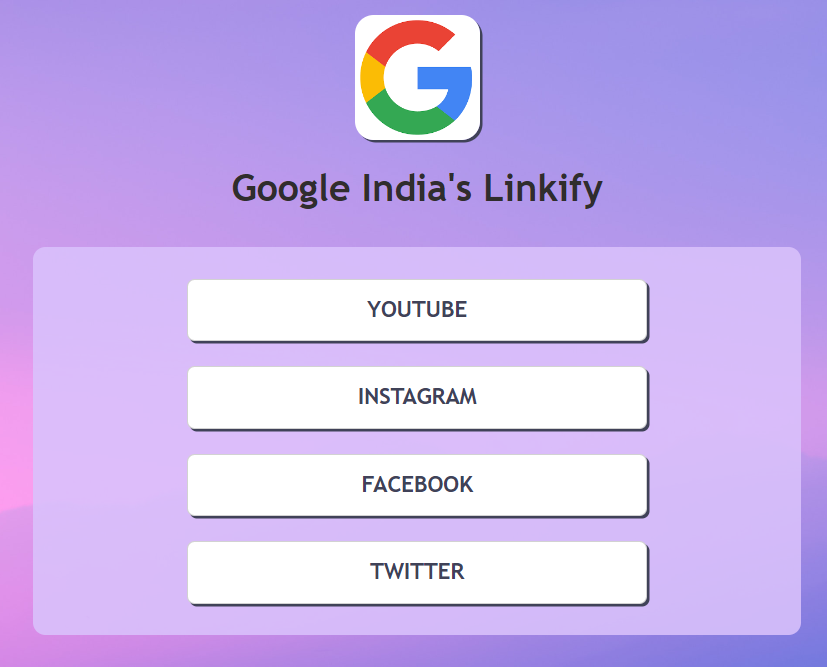
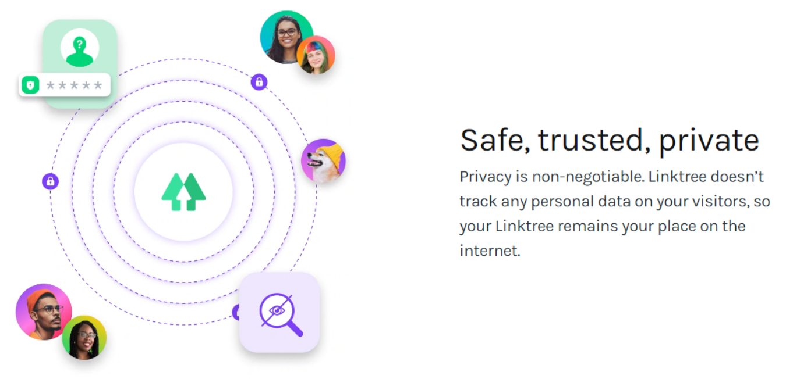

Linkify allows you to create a personalized and customizable page that houses all the important links that you want to share with your audience. It's a link-in-bio solution that can be used on social platforms like Instagram, TikTok, Twitch, Facebook, YouTube, Twitter, LinkedIn, and more. You should use Linktree to aid the discovery of your work, brand, or business.

It basically creates a simple landing page that hosts multiple links. You then pop the link to this landing page in your Instagram bio in order to drive traffic to specific areas of your site.